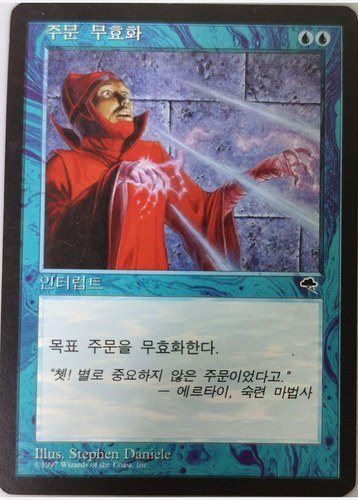
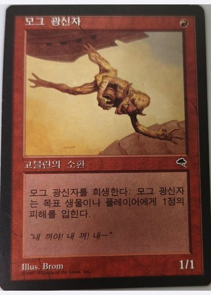
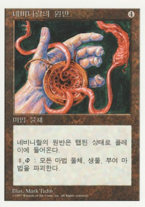
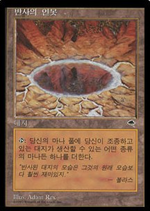
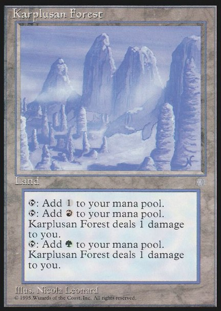

In Part 1 I walked into a room full of strangers for the first time, made my first trade, and came away with four Korean Empyrial Armors. This part moves from the hobby shop back to school — where, in 1997, Magic spread fast, and where it ended badly.
Around that time, more of my schoolmates started to take an interest in Magic. I was already playing, but I didn't dare bring cards to school. Two boys in my class did. We were in the same class but not close. Both were near the top of the class, and I often watched them duel each other with the two decks everyone talked about then: Mirage red Sligh and blue counter. Given what those two decks do, I almost never saw a creature survive more than two turns.
Then one day a teacher caught them dueling in a corner of the playground. Strictly speaking, playing Magic at school broke the school rules, so cards could be confiscated at any moment. Some teachers let it go with a warning. The strict ones took everything and tore the cards up. Had they known what the cards were worth, maybe they would not have dared — but looking back from today, a Korean school in the 1990s was, frankly, a barbaric place.
The two decks were confiscated and never returned. Both boys quit. Magic later took off at our school, with after-school groups everywhere, but I never once saw either of them play again.

In the shop · tap to open
In the shop · tap to openAfter that, my friends and I didn't even dream of playing at school. Cards stayed hidden in our bags all day; after class we went to Interhobby, dueled, and went home. But people noticed what we were up to, and curiosity spread. Before long about six of us in my class were playing.
Then other classes caught on too, and the games got stranger: class-against-class tournaments, four-on-four team duels, whatever we could invent.
Encouraged by all this, we ended up holding a four-on-four team match at school, on a weekend. In those days the school opened its classrooms to students at weekends. Officially it was for voluntary self-study, but nobody really ran it: you could have Chinese food delivered to the classroom, or push desks together into a bed and sleep, and no one said a word. So it never occurred to us that a team match there might be a problem. The place was comfortable, and above all it was free.
Everyone brought something to eat, decks came out, binders opened, trades happened, and it turned into something like a party. On top of that a heavy rainstorm broke outside, with thunder — perfect cover for the noise we were making.
That is exactly when it went wrong.
The teacher on weekend duty never did rounds. For some reason, that day he did. Eight students in a third-floor classroom, drinks and food on the desks, shouting over card games and trades — from where he stood it must have been quite a sight. He roared “Everybody freeze!”, walked slowly in among us while we sat frozen, and stacked every one of our cards on the teacher's desk at the front of the room.
Thinking about that pile now makes me dizzy. A Korean-language Nevinyrral's Disk (네비니랄의 원반). A Korean Reflecting Pool. A Hammer of Bogardan from Mirage — in English, since Mirage was never printed in Korean. Painlands of every kind. And because these were tournament decks, many of them were full four-card playsets.



A few of the boys sitting by the windows made a split-second decision: they snapped rubber bands around their decks and threw them out of the window. Those decks escaped confiscation — and spent the rest of the afternoon in the downpour. Not one of those cards was worth anything afterwards.
In the end, every player in our year lost their decks and binders. We begged, some of us in tears. The teacher swept the whole pile off the desk and carried it to the confiscation box in the teachers' office. (Two of my friends went back one evening to steal it all back. What happened to them is a story for another part.)
So for us, Magic in 1997 ended in disaster. And almost immediately afterwards, Korea itself went into the IMF crisis.
Part 3 picks up from here, as the IMF years begin.